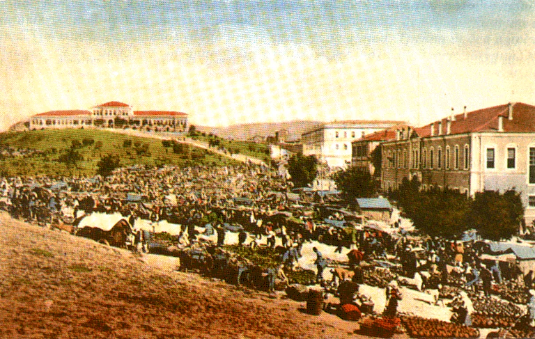
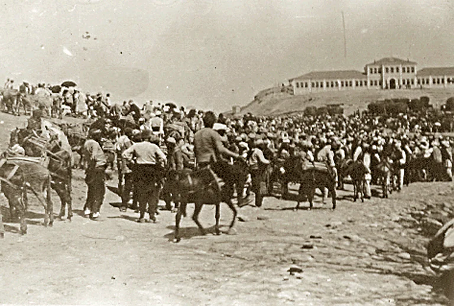
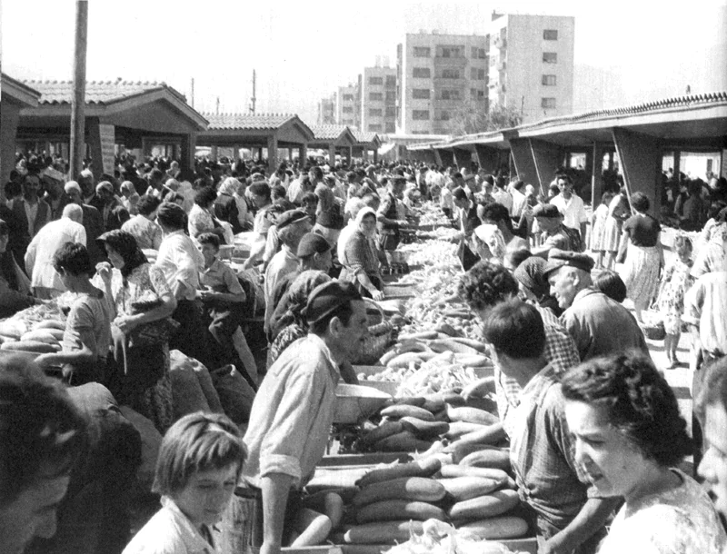

Skopje 1916 - 1917 panorama 1
Documents from the Balkan Wars
- Year
- 1916-1917
- Length
- 00:11

Carters at the Skopje market below the city fortress, opposite the Turkish post office. At the back on the right are the Mustafa Pasha Mosque and the post office. (19th century)

A market in Skopje in the area in front of the Hükümet (municipality) and the Turkish post office - 1902. In the background on the left is the barracks. (end of the 19th century)

Market day in Skopje in front of the Hükümet (municipality) and the Turkish post office, 1902. Behind is the Mustafa Pasha Mosque.

The Skopje market below the city fortress - 19th century.

The Skopje market below the city fortress - 19th century.

Carters on the city square - 19th century.

A market in Skopje in the area in front of the Hükümet (municipality) and the Turkish post office - 1902. The barracks can be seen in the background.

The Old Bazaar, a market for farm produce. In the background the Ishak Bey Mosque and the türbe. (end of the 19th, beginning of the 20th century)

The Old Bazaar, end of the 19th century.

Market in the old bazaar - end of the 19th century.

The Old Bazaar. In the background the Ishak Bey Mosque and the türbe.
- 19th century.

The Old Bazaar. In the background the Ishak Bey Mosque and the türbe.
- 19th century.

Part of the Old Bazaar - market for pottery.
(beginning of the 20th century)

Townspeople and villagers at the Old Bazaar - a moment from the market days (beginning of the 20th century)

Potato seller - a moment from the market days
(around 1930)

The Old Bazaar - the 1920s.

The Old Bazaar - the 1950s.

The Old Bazaar - the 1950s.

Documents from the Balkan Wars
 Aqueduct4 postcards
Aqueduct4 postcards Kale30 postcards
Kale30 postcards Bridges60 postcards
Bridges60 postcards Quay58 postcards
Quay58 postcards Square46 postcards
Square46 postcards Buildings66 postcards
Buildings66 postcards Christian churches19 postcards
Christian churches19 postcards Muslim buildings33 postcards
Muslim buildings33 postcards Officers' Club29 postcards
Officers' Club29 postcards Theatre28 postcards
Theatre28 postcards Railway station13 postcards
Railway station13 postcards Schools36 postcards
Schools36 postcards Parks12 postcards
Parks12 postcards Markets18 postcards
Markets18 postcards Streets38 postcards
Streets38 postcards Panorama I60 postcards
Panorama I60 postcards Panorama II30 postcards
Panorama II30 postcards Collages55 postcards
Collages55 postcards Floods9 postcards
Floods9 postcards Earthquake27 postcards
Earthquake27 postcards Skopje 200026 postcards
Skopje 200026 postcards